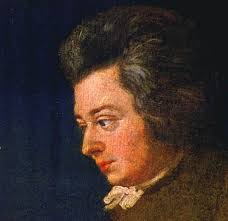

Mozart was born into a musical family, with his father Leopold being a successful composer and musician. From a young age, Mozart was exposed to music and began composing his own pieces by the age of five. He and his older sister Nannerl were both prodigies and toured throughout Europe, showcasing their musical abilities to royalty and nobility. Despite his success, Mozart struggled financially for much of his life and had to rely on commissions and patrons to support himself and his family.
Major Works
- Symphony No. 40 in G minor, K. 550
- Requiem in D minor, K. 626
- The Marriage of Figaro, K. 492
- Piano Concerto No. 21 in C major, K. 467
- Serenade No. 13 in G major, K. 525 ("Eine kleine Nachtmusik")
- Don Giovanni, K. 527
- Clarinet Concerto in A major, K. 622
Mozarts Contributions to the Classical Era of Classical Music
Wolfgang Amadeus Mozart was one of the most influential composers of the Classical era. He played a significant role in developing the classical style, particularly in the areas of harmony and melody. Mozart's contributions to music theory are evident in his compositions, which demonstrate a mastery of the principles of counterpoint, harmony, and musical form. His music is characterized by its elegance, clarity, and balance, and it is renowned for its technical and emotional depth. Mozart's innovations in opera had a profound impact on the genre. His operas were groundbreaking in their use of complex characters and intricate plotlines, as well as in their integration of music, drama, and stagecraft. He helped to establish the genre of the opera buffa, or comic opera, which became one of the most popular forms of entertainment in the late 18th century. His work in this area laid the groundwork for the Romantic era, which would see further developments in the operatic form. Mozart's contributions to the development of the symphony and the string quartet were also significant. He wrote more than 40 symphonies and more than 20 string quartets, which were notable for their technical brilliance and innovative use of melody and harmony. He expanded the classical form of the symphony by adding new movements, and his use of the minuet and trio as a third movement became standard in the classical period. His contributions to the string quartet form were similarly groundbreaking, as he expanded the genre with new techniques such as fugues and canons. Overall, Mozart's musical innovations had a profound impact on the development of classical music and set the stage for the Romantic era that followed.
Personal Life
Mozart's personal life was tumultuous, marked by financial struggles, health problems, and personal tragedy. He married Constanze Weber in 1782, and the couple had six children, only two of whom survived infancy. Mozart's health deteriorated in his final years, and he died on December 5, 1791, at the age of 35.
Legacy
Mozart's legacy as a composer and musician is difficult to overstate. His works have been performed and studied for centuries, and his influence on Western music is immeasurable. Mozart's genius lies not only in the beauty and complexity of his compositions but also in his ability to capture the human experience through his music. His legacy continues to inspire new generations of musicians and listeners, and his music remains a testament to the enduring power of the human spirit.
Requiem, KV 626: Sequentia, Lacrimosa · KPM Philharmonic Orchestra · KPM Choir · Hieronym Baltazar · Maciej Korczaky · Wolfgang Amadeus Mozart · KPM Philharmonic Orchestra · KPM Choir · Hieronym Baltazar · Maciej Korczaky
Lacrimosa
"Mozart's Lacrimosa" is the last piece of his famous Requiem, which he started to compose in 1791 and was left unfinished after his death later that year. Lacrimosa means "tearful" in Latin, and the piece truly captures the emotions of sadness and grief. It starts with a haunting melody in D minor, which is sung by the choir, accompanied by a simple yet powerful orchestral arrangement. The piece then gradually builds up to a climax, with the choir and orchestra reaching their highest intensity, before ending abruptly on the final note. The music is characterized by its expressiveness, fluidity, and emotional depth, which are typical of Mozart's works.
Performed by Daniel Barenboim
K.333 Sonata, First Movement, in A major
Mozart's K. 333 Sonata is a solo piano piece, composed in 1783, during a period in which Mozart was experimenting with various forms and styles of music. The sonata consists of three movements: Allegro, Andante cantabile, and Allegretto grazioso. The first movement opens with a bright and cheerful melody, which is then developed and elaborated upon in various ways throughout the movement. The second movement is more reflective and lyrical, with a beautiful melody that flows gracefully over the accompaniment. The final movement is a playful and light-hearted rondo, which brings the sonata to a joyful and satisfying conclusion. The K. 333 Sonata is known for its technical challenges and demands, particularly in the virtuosic third movement.
The Death
Mozart's death at the age of 35 remains shrouded in mystery. He had been ill for some time and was bedridden in his final days. Some reports suggest that he may have been poisoned, while others attribute his death to natural causes. Regardless of the cause, his death was a profound loss for the world of music, and his legacy continues to be celebrated and studied today.